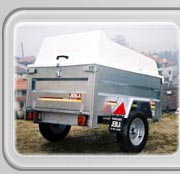
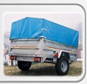

Do equipamento
à mercadoria.
A empresa fabrica atrelados de carga e apresenta soluções em poliéster. Indique a carga, as dimensões e o uso previsto para enquadrar a escolha.
Falar sobre cargaAtrelados para diferentes utilizações. Comece pelo que vai transportar e confirme as condições com a Mecinor.

A empresa fabrica atrelados de carga e apresenta soluções em poliéster. Indique a carga, as dimensões e o uso previsto para enquadrar a escolha.
Falar sobre carga
Motos, karting, caça e motas de água integram as utilizações referidas pela Mecinor. A configuração e a adequação devem ser analisadas com a equipa.
Explicar a utilizaçãoFotografias do catálogo publicado. Não representam confirmação de stock ou da configuração atualmente disponível.
Tipo de carga, dimensões e peso conhecido.
Uso previsto e necessidades de carga e descarga.
Partilhe os dados do veículo para esclarecer a compatibilidade com a empresa.